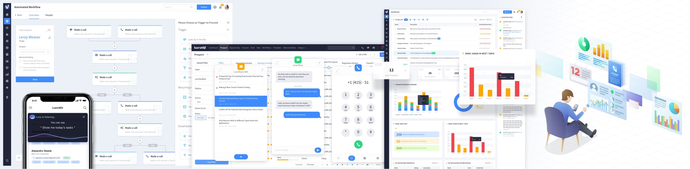
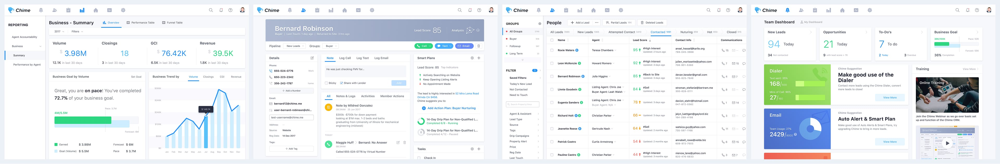
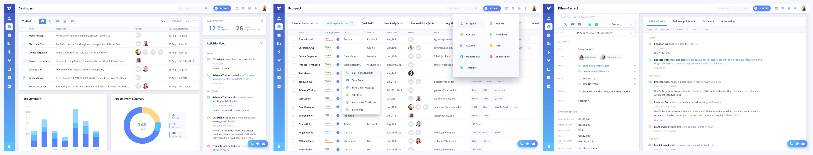
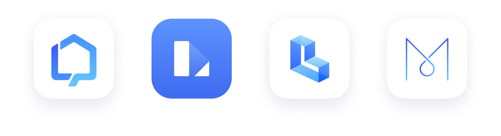

Loading...
Loading...
Role: UX Lead & Product Design Strategist
Renren Inc., once known as "China’s Facebook," began a bold and ambitious global expansion in 2016. Moving beyond its social networking roots, Renren invested heavily in U.S.-based internet startups, discovering new opportunities and untapped market segments in overseas industries, particularly in real estate and transportation.
At the time of my joining, Renren was actively entering the U.S. real estate market, which, unlike China's consolidated ecosystem, is highly localized with region-specific leaders. This fragmentation created a massive opportunity for SaaS solutions targeting agents and brokers. Many existing real estate CRMs were outdated, complex, and resistant to change, lacking modern mobile experiences and intuitive design.
Chime
An intelligent CRM platform combining lead generation, marketing automation, smart dialers, and in-depth sales analytics dashboards. It introduced gamified incentives to motivate sales agents to meet performance goals, transforming how agents approached daily operations
Lucrativ
A flexible CRM system designed for broader B2B use cases beyond real estate. Its highly modular architecture allowed teams to adapt workflows easily, fostering higher productivity and better client management across different industries.

Lofty
Originally an extension of Chime, Lofty focused on delivering a true mobile-first experience. It empowered agents to instantly share visually rich property listings with clients, manage contacts, schedule showings, and receive real-time notifications — all from their smartphones. This design vision was later extended to position Lofty as a potential "LinkedIn for real estate," creating a social layer that enabled agents to build networks, share insights, and exchange market intelligence rapidly within the community.
I led the UX design for multiple flagship CRM products specifically tailored to real estate professionals. Under my design leadership, these products collectively won multiple Inman Innovation Awards and became trusted solutions for over 40,000 U.S. real estate professionals. The enhanced UX dramatically reduced onboarding time, improved adoption rates, and increased customer satisfaction scores across key segments.
TruckerPath
Beyond real estate, Renren expanded into the transportation sector by acquiring TruckerPath, a leading app for U.S. truck drivers. Post-acquisition, I led the redesign of TruckerPath's UI/UX, enhancing its usability and visual appeal. The revamped app facilitated real-time navigation, parking availability, and freight matching, serving over 600,000 monthly active users and covering more than 33% of U.S. long-haul truck drivers.
Through these transformative projects, I played a critical role in helping Renren transition from a domestic social media giant to a global SaaS innovator. My work combined strategic design thinking, brand repositioning, and in-depth UX research to deliver products that not only solved practical user problems but also drove new business growth and expanded market presence internationally.